To reset all Depots, Vehicle Types, Routes, Vehicles, Points, and Clusters, enter
https://azsgp-wac-swm-dev.azurewebsites.net/reset_all_data into the address bar.
Afterwards, remember to refresh to see the changes!
Break Route
To choose the Break Route scenario, ensure the slider is at the "Break Route" position.
Routes to be broken go in the middle, Routes to optimize go on the right, Routes not to be considered by the optimizer stay
on the left, in the example below, R16 points will be broken into the R17, R18, and R20.
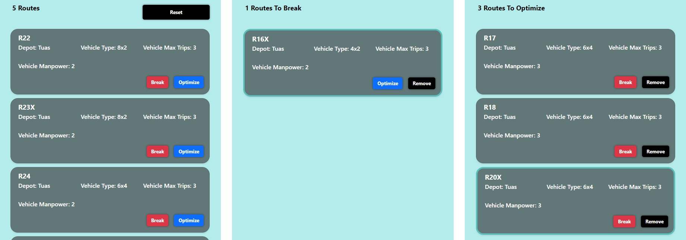
Select which Routes to break by clicking the buttons.
Select which Routes to optimize by clicking the buttons.
Select which Routes to remove from the optimizer by clicking the buttons.
Quickly remove all routes by clicking the button.
Choose whether to use clusters when optimizing. Using clusters will result in a faster run time but may yield less optimal results. Finally, click to start the opimitzation!
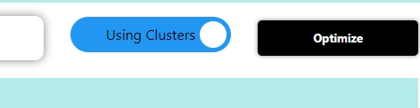
Break Down
To choose the Break Down scenario, ensure the slider is at the "Break Down" position.
Routes to be broken go in the middle, Routes to optimize go on the right, Routes not to be considered by the optimizer stay
on the left, in the example below, R16 points will be broken into the R17, R18, and R20.
Select which Routes to break by clicking the buttons.
Select which Routes to optimize by clicking the buttons.
Select which Routes to remove from the optimizer by clicking the buttons.
Quickly remove all routes by clicking the button.
Choose whether to use clusters when optimizing. Using clusters will result in a faster run time but may yield less optimal results. Finally, click to start the opimitzation!
Reshuffle
To choose the Reshuffle scenario, ensure the slider is at the "Reshuffle" position.
Routes to be Reshuffled go on the right, Routes not to be considered by the optimizer stays on the left.
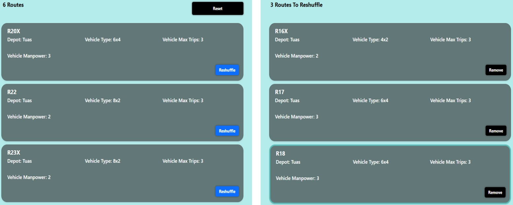
Select which Routes to reshuffle by clicking the button.
Remove the Route from the Optimizer by clicking the button.
Quickly remove all routes by clicking the button.
Choose whether to use clusters when optimizing. Using clusters will result in a faster run time but may yield less optimal results. Finally, click to start the opimitzation!
Free Optimization is similar to Simple Optimization, except there is more freedom to choose
what points and vehicles are involved. You may select an entire route, or just a subset of
individual points from that route.
Select the available Vehicles by clicking the Vehicle Cards on the left. The selected Vehicles will appear under the "Vehicles Involved" column on the right.
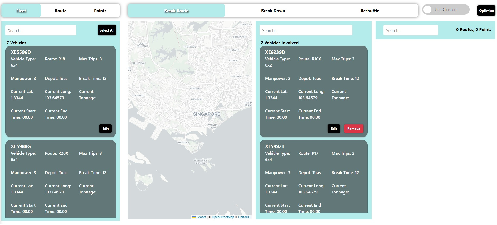
Click button to edit the details for the Vehicle, such as its current Latitude and Longtitude, Tonnage, Manpower, and Start and End timings.
Click button to save the changes.
Click button to remove the Vehicle from the optimization.
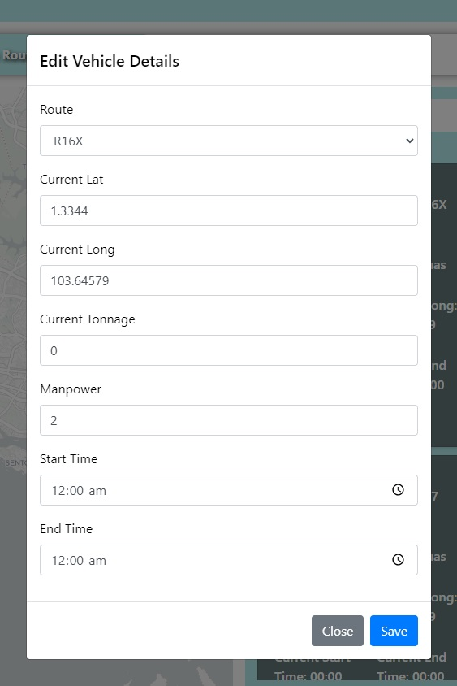
Select all the points in a Route by clicking the Route Cards on the left. The points from the selected Routes will appear on the right.
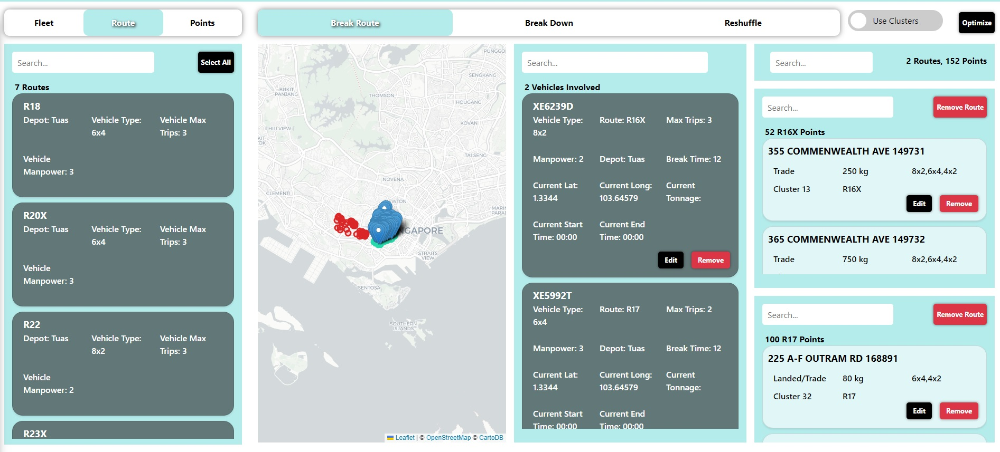
Select individual Points by clicking on the Collection Point Cards on the left. Selected Points will appear on the right, seperated by their Routes.
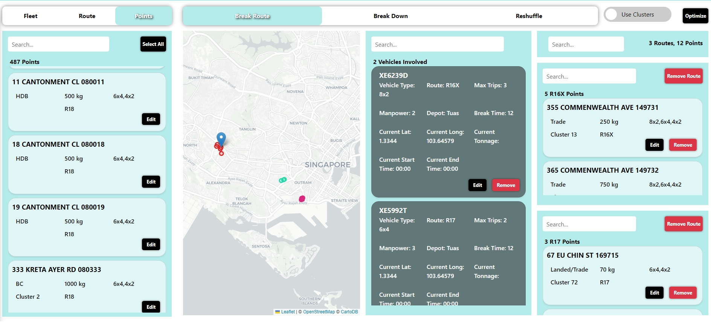
Click button to edit the details for the Collection Point, such as its current Allowed Vehicle Type and Tonnage.
Use Ctrl + Click to select multiple options for the Allowed Vehicle Type.
Click button to save the changes.
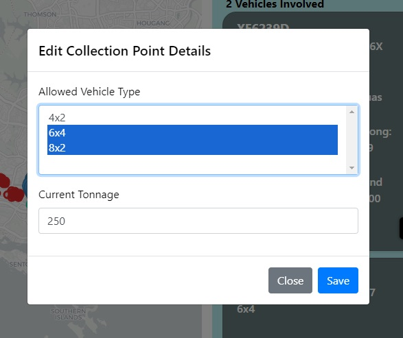
Click button in each Collection Point Card to remove the individual Collection Point from the optimization.
Or click the to remove all Collection Points belonging to that Route.
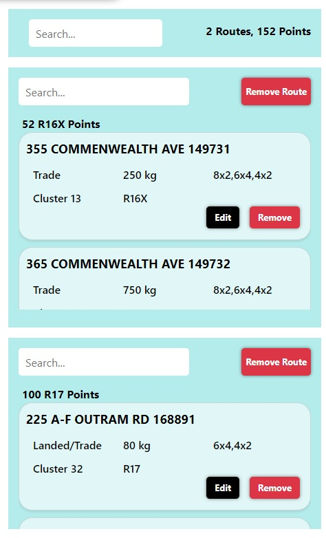
Break Route
To choose the Break Route scenario, ensure the slider is at the "Break Route" position.
Collection Points involved will be broken into the selected Vehicles.
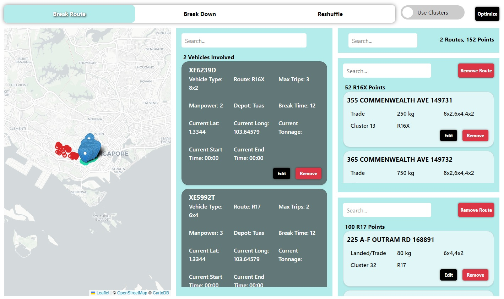
Break Down
To choose the Break Down scenario, ensure the slider is at the "Break Down" position.
Vehicles involved should be all Vehicles except the one that broke down. Collection Points involved will be broken into the selected Vehicles.
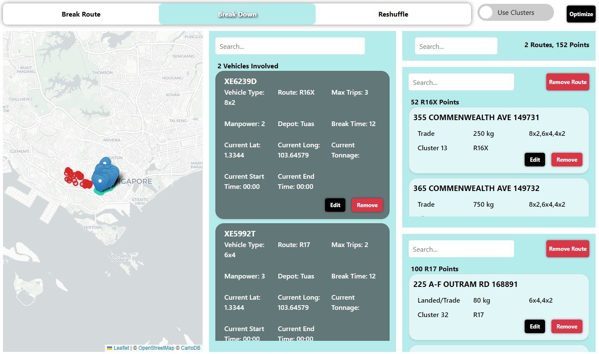
Reshuffle
To choose the Reshuffle scenario, ensure the slider is at the "Reshuffle" position.
Collection Points involved will be broken into the selected Vehicles.
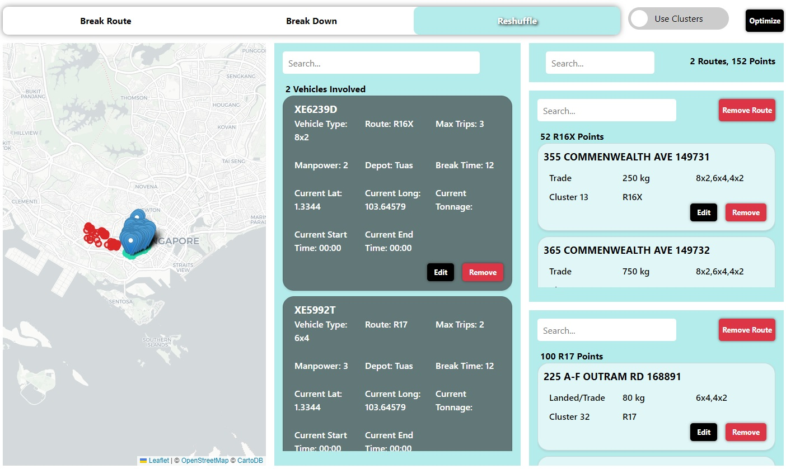
Choose whether to use clusters when optimizing. Using clusters will result in a faster run time but may yield less optimal results. Finally, click to start the opimitzation!
words
words
words
words
words
words
words
Depots
All Depots will be displayed in the first column.
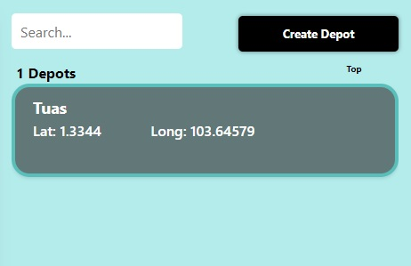
Click on an existing Depot to edit it, or click to create a new Depot.
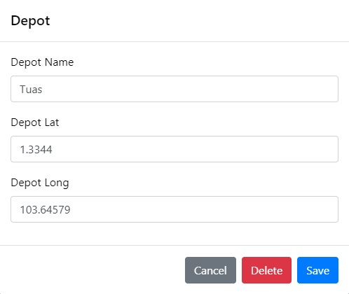
Vehicle Types
All Vehicle Types will be displayed in the second column.
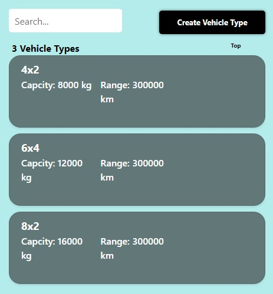
Click on an existing Vehicle Type to edit it, or click to create a new Vehicle Type.
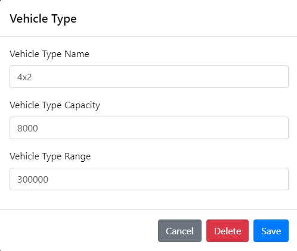
Routes
All Routes will be displayed in the third column.
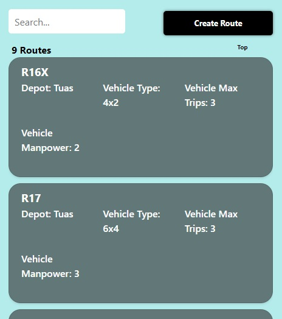
Click on an existing Route to edit it, or click to create a new Route.

Vehicles
All Vehicles will be displayed in the last column.
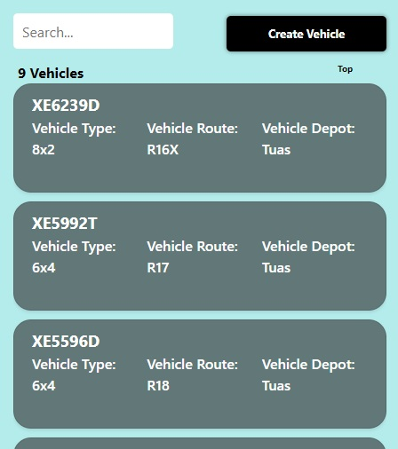
Click on an existing Vehicle to edit it, or click to create a new Vehicle.
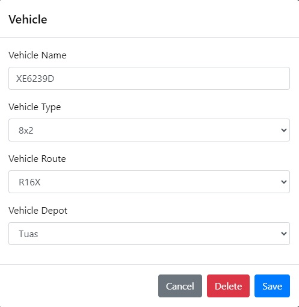
Adding Points
Click button to upload a batch of points. Or, right-click
on the map to add a new point at that location. When adding by right-click, you may drag the marker around to the desired location.
Be sure to cick
to save the point, else it will be deleted!
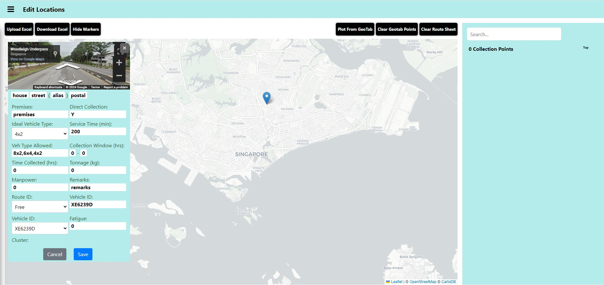
Edit/Delete Points
Click on any marker on the map, or the Collection Point Cards on the right to show the overlay. The current marker will be highlighted with a red circle
under it.
Click button to delete a point. Point will only be deleted after clicking on button.
Click button to edit. Type into the white boxes to edit the data, or use the dropdown menus for selected fields. You may also drag the marker around
to the desired location. The Latitude and Longtitude of the marker will be automatically calculated.
Click to cancel your changes.
Be sure to click button to save the changes!
Click button to close the overlay. This will cancel any unsved changes.
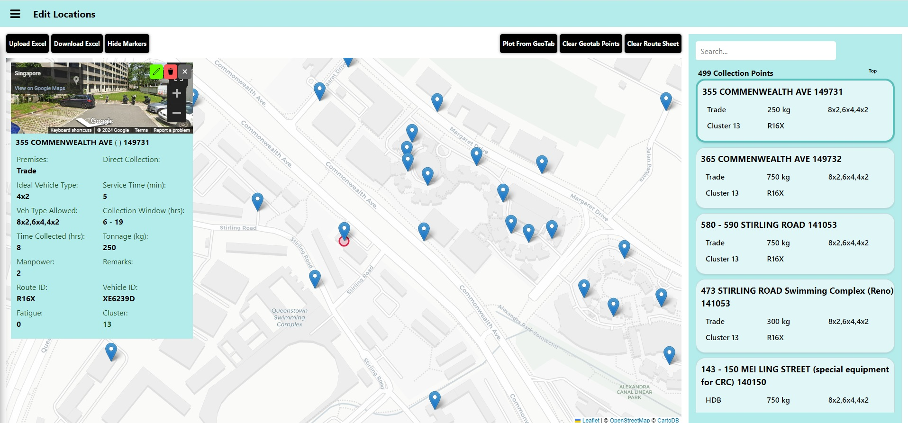
Plot from Geotab
Click button to plot historic data from Geotab.
Select the Vehicle Number from the dropdown menu, along with the start and end dates from the calendar. Click
to plot the daily estimated stopping points for the selected vehicle between the selected dates. If there is an error message, try plotting again, or change
the vehicle/dates and trya again. Once plotting is done, points do not show up yet! Click the layer control on the top right corner of the map and select the
dates you wish to display. You may also use the search bar above the cards to filter by Route Number.
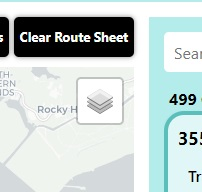
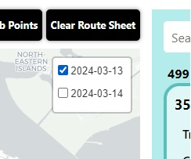
Blue markers are the Collection Points. Small red circles are the estimated stopping points.
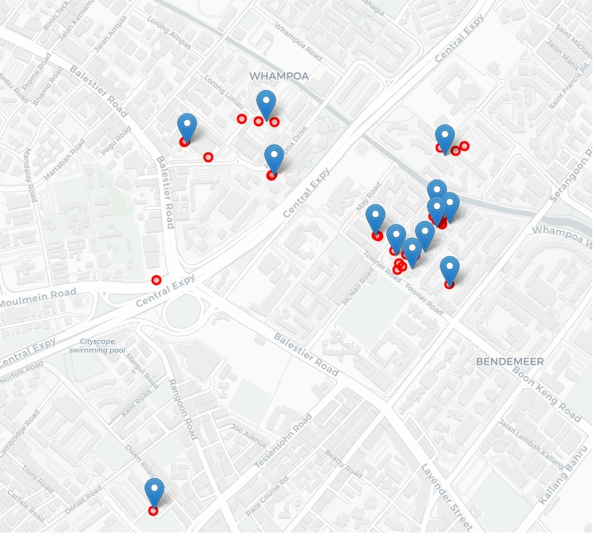
Each small circle represents a collection point, each colour represents a cluster. All Clusters can be found in the Cluster column on the right. All
Collection Points can be found in the Collection Points Column on the right. Click to display
points that are not part of a cluster.
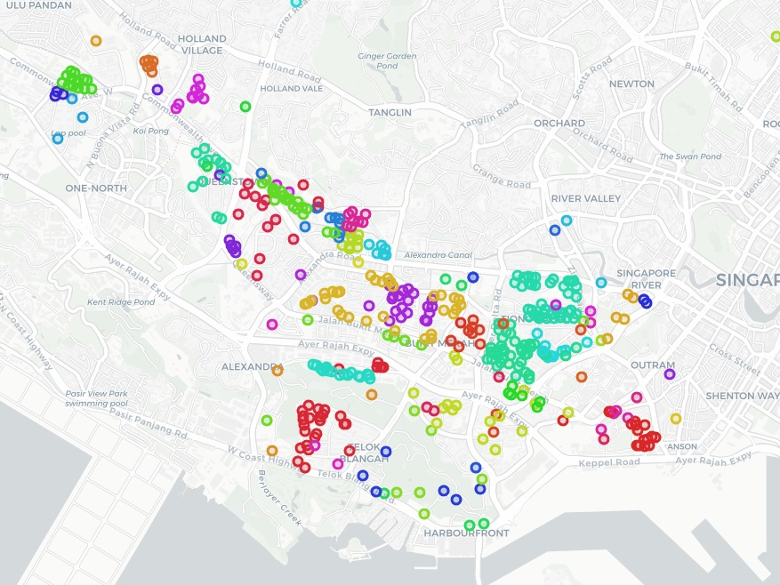
Create Cluster
Click button to creat a new cluster. Only the Cluster Name can be set, the rest will be automatically
calculated.
Be sure to cick to save the cluster, else it will be deleted!
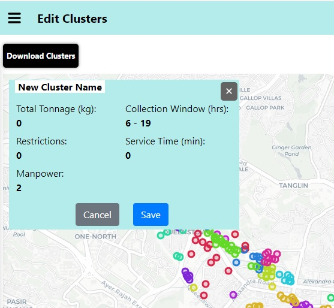
Edit/Delete Cluster
Click on a Cluster Card to select the Cluster.
Click button to delete a cluster. Cluster will only be deleted after clicking on button.
All Collection Points that belonged to this cluster will now be Unclustered, click to find these points.
Click button to edit. Only the Cluster Name can be set, the rest will be automatically
calculated.
Click to cancel your changes.
Be sure to click button
to save the changes!
Click button to close the overlay. This will cancel any unsved changes.
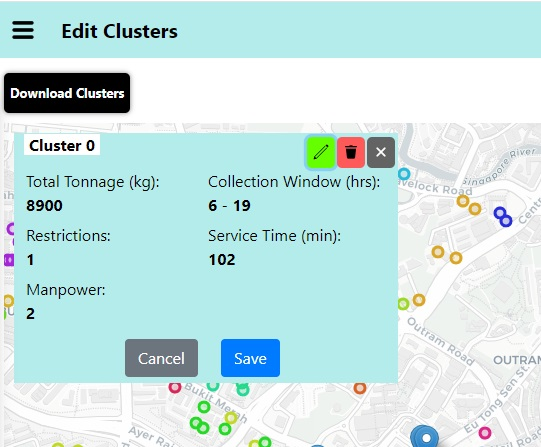
Add/Remove Collection Point
Click on a Cluster Card to select the Cluster. The Collection Points in the Cluster will appear in the "Cluster Collection Points" container on top.
The Collection Points not in the Cluster will appear in the "All Collection Points" container on bottom.
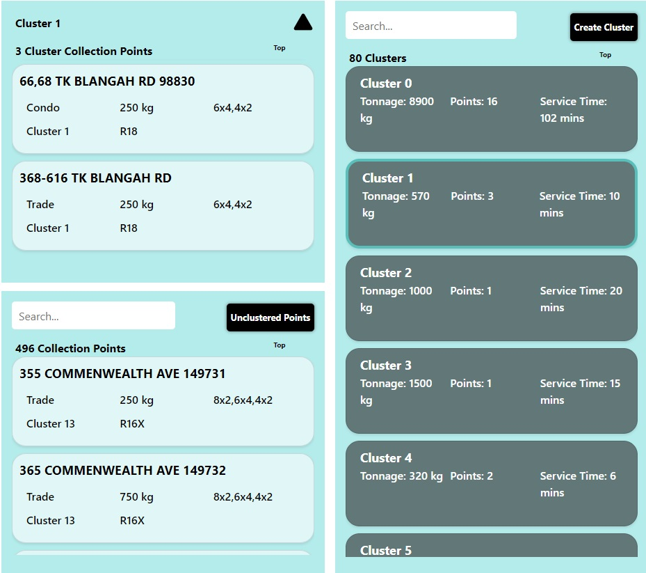
Add
Drag the Collection Point Card from the "All Collection Points" container into the "Cluster Collection Points" container to add the Collection Point
to the Cluster.
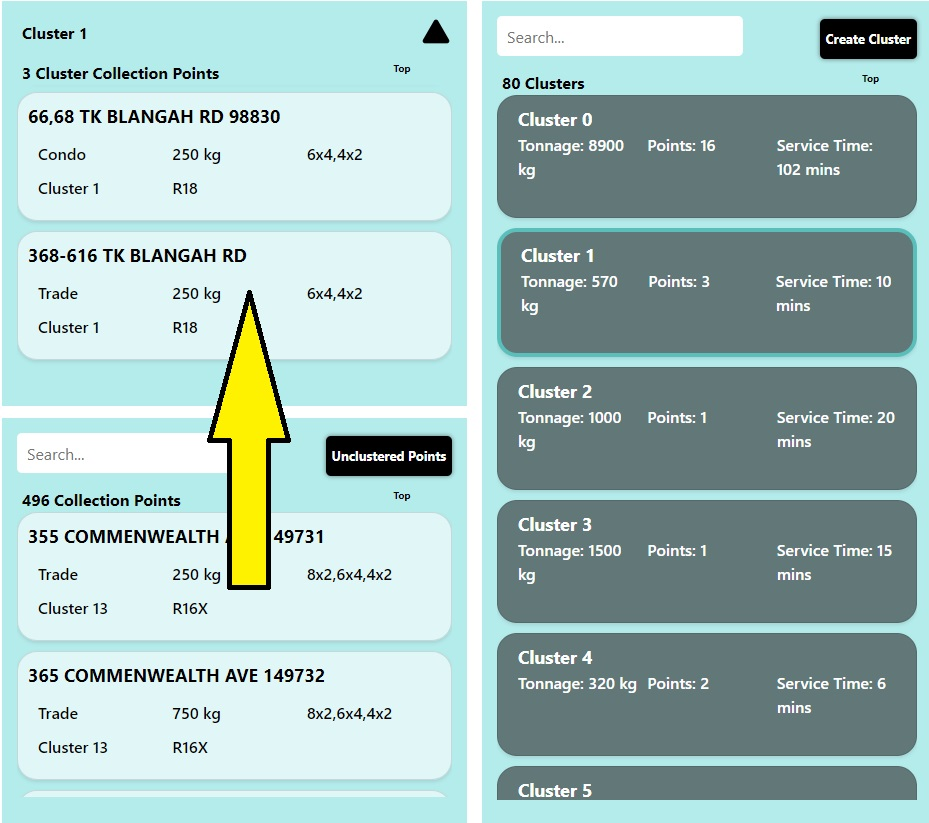
Drag the Collection Point Card from the "All Collection Points" container or "Cluster Collection Points" container into any Cluster Card on the right to add the Collection Point
directly to the Cluster.
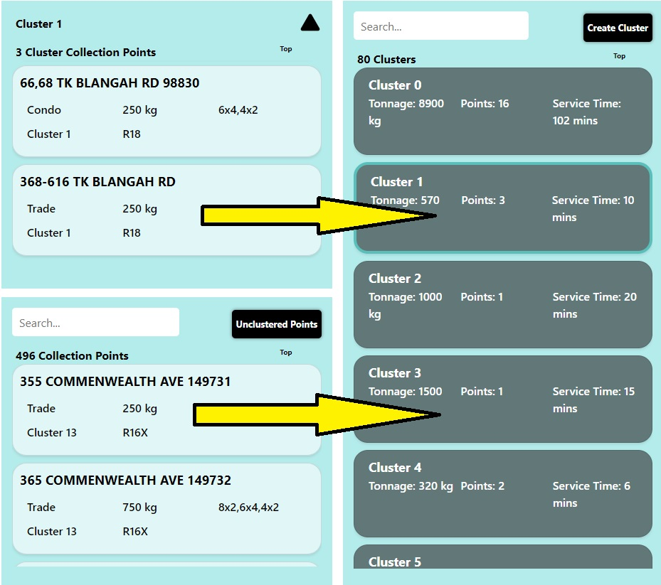
Remove
Drag the Collection Point Card from the "Cluster Collection Points" container into the "All Collection Points" container to set the Collection Point
as Unclustered.
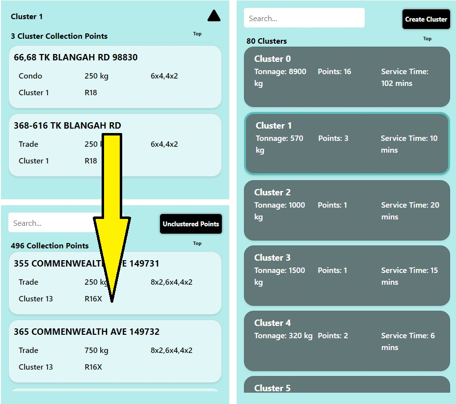
Be sure to click button
to save the changes!